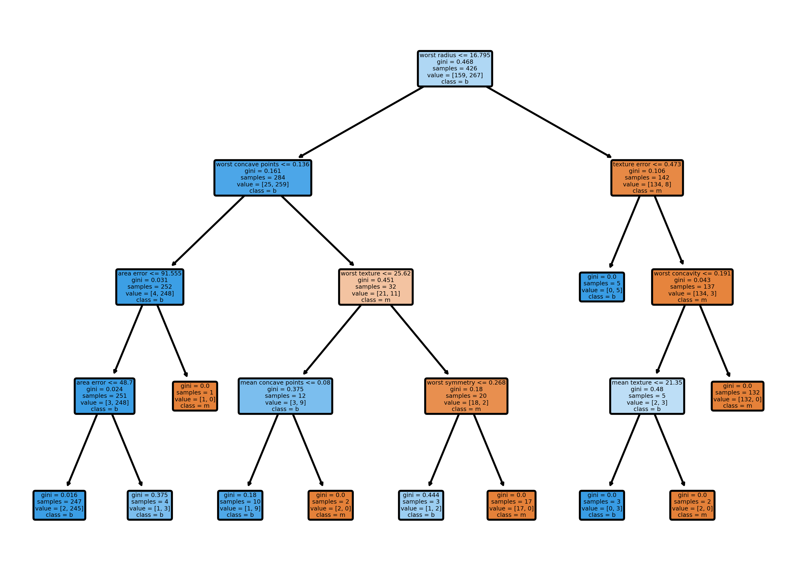
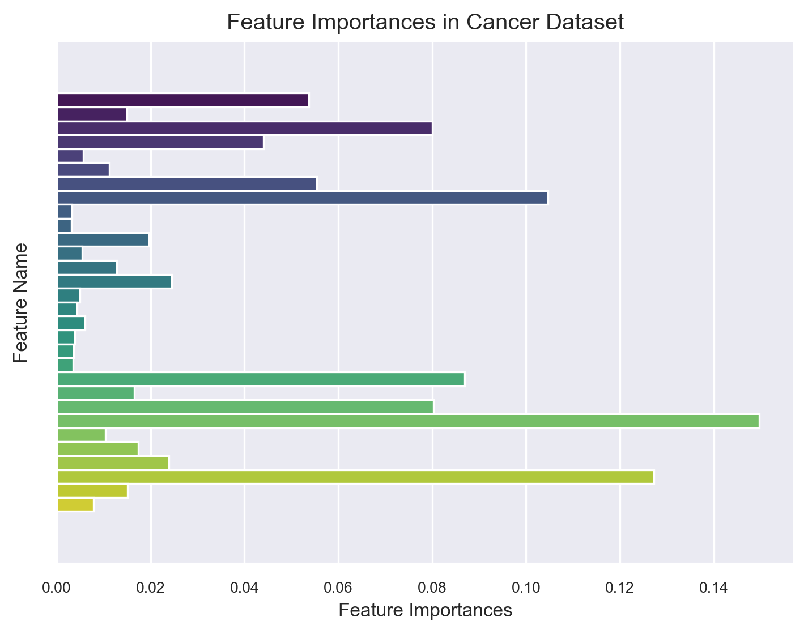

Classification with Decision Tree and Random Forest
classification
machine learning
code
Author
Xuhui Zeng
Published
December 12, 2023
A decision tree is a hierarchical tree-like structure composed of a root node, internal nodes, and leaf nodes. In the context of classification, each leaf node represents a specific class or decision outcome, while the internal nodes correspond to attribute tests. The tree structure is built by recursively splitting the dataset based on the values of different attributes.
The process starts at the root node, which contains the entire dataset, and, through a series of attribute tests, the data is partitioned into subsets as it traverses down the tree. This recursive process continues until reaching the leaf nodes, where the final classification decision is made. Essentially, a decision tree works by iteratively asking if/else questions about the input features to make a sequence of decisions that lead to the classification of instances into specific classes at the leaf nodes.
Decision trees are susceptible to overfitting when allowed to grow until all nodes become pure leaf nodes. Overfitting occurs when the model fits the training data too closely, capturing noise and fluctuations in the data, which may not generalize well to new, unseen data.
To address the overfitting challenge in decision trees, strategies are employed to prevent them from becoming overly complex:
Pre-pruning (Early Stopping): This strategy involves stopping the tree-building process prematurely. Limiting the number of leaf nodes or the maximum depth of the tree helps control its complexity. By setting these constraints, the tree is prevented from becoming too deep and capturing noise in the training data.
Post-pruning (Pruning after Construction): In this approach, the tree is fully constructed, and then some branches are either removed or combined. The decision to prune branches is based on the information content they provide. If a branch contributes little to the overall predictive power of the tree, it may be pruned to simplify the model and improve generalization to new data.
Let’s implement a decision tree classification on the breast cancer dataset without performing pre-pruning, allowing the tree to grow until every node becomes a leaf node.
import pandas as pdimport numpy as npimport matplotlib.pyplot as pltimport seaborn as snsfrom sklearn.tree import DecisionTreeClassifierfrom sklearn.datasets import load_breast_cancerfrom sklearn.model_selection import train_test_split# Load the breast cancer datasetcancer_data = load_breast_cancer()features = cancer_data.datalabels = cancer_data.target# Split the dataset into training and testing setsX_train, X_test, y_train, y_test = train_test_split(features, labels, stratify=labels, random_state=42)# Initialize and fit a Decision Tree Classifiertree_classifier_1 = DecisionTreeClassifier(random_state=42)tree_classifier_1.fit(X_train, y_train)# Evaluate the model on the training settraining_accuracy = tree_classifier_1.score(X_train, y_train)print("Training set accuracy: {:.4f}".format(training_accuracy))# Evaluate the model on the test settest_accuracy = tree_classifier_1.score(X_test, y_test)print("Test set accuracy: {:.4f}".format(test_accuracy))# Get the depth of the treeprint("Depth of the decision tree: {}".format(tree_classifier_1.get_depth()))
Training set accuracy: 1.0000
Test set accuracy: 0.9231
Depth of the decision tree: 7
The decision tree has grown to a deep tree with a depth of 7. As a result, the accuracy on the training set has 100%, indicating every node becomes a leaf node. On the other hand, the accuracy of the test set is lower at 92%. While it is still very high, it may be a sign of overfitting that reduces that generalization ability of the model. To mitigate overfitting, we can use the pre-pruning technique to limit the depth of the tree by setting the max_depth parameter.
# Initialize and fit a new Decision Tree Classifier, and limit the max_depth to 4tree_classifier_2 = DecisionTreeClassifier(random_state=42, max_depth=4)tree_classifier_2.fit(X_train, y_train)# Evaluate the model on the training settraining_accuracy = tree_classifier_2.score(X_train, y_train)print("Training set accuracy: {:.4f}".format(training_accuracy))# Evaluate the model on the test settest_accuracy = tree_classifier_2.score(X_test, y_test)print("Test set accuracy: {:.4f}".format(test_accuracy))
Training set accuracy: 0.9883
Test set accuracy: 0.9441
By limiting the maximum depth of the decision tree, although the accuracy on the training set decreases, the model demonstrates improved generalization on new data. This reflects enhanced capability to perform well on unseen instances.
Let’s see what this pruned tree looks like:
from sklearn.tree import plot_treeplt.rcParams['figure.dpi']=300plot_tree( tree_classifier_2, filled=True, rounded=True, feature_names=list(cancer_data.feature_names), class_names=["m","b"], fontsize=3,);

We can see there are only 11 benign samples on the entire left tree to the root node (worst radius <= 16.795), this is showing that this feature has a very high weight in the model, which may still indicate a risk of overfitting. The classifier relies heavily on just a few of the features. Essentially, in lieu of reviewing the entire tree, we can just visulize the importance of features by order.
def plot_feature_importances_cancer(model): feature_importances = model.feature_importances_ sns.set(rc={"axes.labelsize": 10, "xtick.labelsize": 8, "ytick.labelsize": 8})# Create a DataFrame for better integration with Seaborn data = pd.DataFrame({'Feature': cancer_data.feature_names, 'Importance': feature_importances})# Plot using Seaborn barplot sns.barplot(x='Importance', hue='Feature', legend=False, data=data, palette='viridis') plt.xlabel("Feature Importances") plt.ylabel("Feature Name") plt.title("Feature Importances in Cancer Dataset") plt.show()
- Interpretability: Decision trees are easy to understand and interpret, making them suitable for explaining the reasoning behind decisions.
- No Assumptions about Data: Decision trees do not make assumptions about the distribution of data and can handle both numerical and categorical features.
- Feature Selection: Decision trees implicitly perform feature selection by identifying the most informative features at each split.
On the other hand, the disadvantages of a decision tree include:
- Overfitting: Decision trees are prone to overfitting, especially when they are deep and too complex. This can lead to poor generalization on new, unseen data.
- Instability: Small variations in the data can result in a completely different tree structure, making decision trees somewhat unstable.
One way to overcome the disadvantages of a decision tree is to use an ensemble of decision trees. The idea behind ensembles is based on the concept that combining diverse models can compensate for their individual weaknesses, leading to better overall performance.
Random Forest is an ensemble method that operates by constructing a multitude of decision trees at training time and outputs the class that is the mode of the classes in a classification task. It builds multiple decision trees and merges them together to get a more accurate and stable prediction. The figure below shows the general idea of a random forest.
To construct a random forest classifier, the number of trees to be built needs to be determined, which is set using the n_estimators parameter.
For building each individual tree, the process begins with bootstrapping. Bootstrapping involves randomly sampling with replacement from the pool of n_samples data points, creating a new dataset of the same size. This means that the same data point may appear multiple times in the new dataset. Subsequently, a decision tree is constructed based on this bootstrapped dataset.
During the construction of each tree, a random subset of features is chosen for testing, instead of considering all features. The number of features in the subset is controlled by the max_features parameter. This combination of bootstrapping and testing with random feature subsets ensures that each tree in the random forest is different.
For regression problems, the final result is the average of the results from all trees in the random forest. In classification problems, a soft voting approach is used, where the average probabilities for different classes from each tree are calculated, and the class with the highest average probability is chosen as the final result.
Let’s try constructing a random forest classifier with 100 decision trees on the same breast cancer dataset:
from sklearn.ensemble import RandomForestClassifier# Initialize and fit a Random Forest Classifierrf_classifier = RandomForestClassifier(n_estimators=100, random_state=42)rf_classifier.fit(X_train, y_train)# Evaluate the model on the training settraining_accuracy = rf_classifier.score(X_train, y_train)print("Training set accuracy: {:.4f}".format(training_accuracy))# Evaluate the model on the test settest_accuracy = rf_classifier.score(X_test, y_test)print("Test set accuracy: {:.4f}".format(test_accuracy))
Training set accuracy: 1.0000
Test set accuracy: 0.9580
We can see that the accuracy of the random forest is 96%, which is better than the results obtained from individual decision trees even after pruning. It’s possible to fine-tune the max_features parameter or perform pre-pruning on the trees within the forest. However, in many cases, the default parameters are good enough to produce satisfactory results.
Similarly, we can visulize the importance of features by order:
plot_feature_importances_cancer(rf_classifier)

Unlike a single decision tree, many of the feature importances are great than 0 in a random forest. The weights of the features are more averaged out compared to those in a single decision tree.
The advantages of a random forest include:
- Improved Generalization: Random Forest mitigates overfitting by aggregating predictions from multiple trees, leading to better generalization on new data.
- Robustness: Random Forest is less sensitive to noise and outliers in the data compared to individual decision trees.
- Feature Importance: Random Forest provides a measure of feature importance, helping in feature selection.
The disadvantages of a random forest include:
- Less Interpretability: While an individual decision tree is easy to interpret, the ensemble nature of Random Forest makes it less straightforward to explain the overall model reasoning.
- Computational Complexity: Training a Random Forest can be computationally expensive, especially with a large number of trees and features.